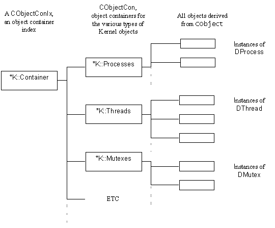

|
| |
Kernel objects such as mutexes, semaphores, threads, processes, timers are reference counting objects, i.e. they are instances
of classes derived from CObject.
The Kernel maintains all such objects in object containers, one container for each type; i.e. one for threads, one for processes, one for
mutexes etc. as shown below.

See also:
Copyright ©2002 Symbian Ltd. 6.1-00174 |
|